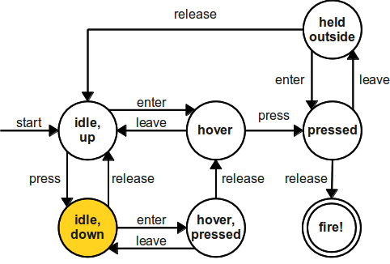

Markov Decision Processes
From Finite State Machines to Markov Decision Process
The kind of task that can be solved by RL is called a Markov Decision Process (MDP). For a MDP, the environment is fully observable, i.e. the current state s_t completely characterizes the process at time t. Actions a_t provoke transitions between two states s_t and s_{t+1}, according to transition probabilities. A reward r_{t+1} is (probabilistically) associated to each transition.

n-armed bandits are MDPs with only one state.
Finite State Machine (FSM)
A finite state machine (or finite state automaton) is a mathematical model of computation. A FSM can only be in a single state s at any given time. Transitions between states are governed by external inputs, when some condition is met.

A FSM is fully defined by:
- The state set \mathcal{S} = \{ s_i\}_{i=1}^N.
- Its initial state S_0.
- A list of conditions for each transition.
A FSM is usually implemented by a series of if/then/else statements:
- if state == “hover” and press == true:
- state = “pressed”
- elif …
Markov Chain (MC)

A first-order Markov Chain (or Markov process) is a stochastic process generated by a FSM, where transitions between states are governed by state transition probabilities.
A Markov Chain is defined by:
- The state set \mathcal{S} = \{ s_i\}_{i=1}^N.
- The state transition probability function:
\begin{aligned} \mathcal{P}: \mathcal{S} \rightarrow & P(\mathcal{S}) \\ p(s' | s) & = P (s_{t+1} = s' | s_t = s) \\ \end{aligned}
Markov property
When the states have the Markov property, the state transition probabilities fully describe the MC. The Markov property states that:
The future is independent of the past given the present.
Formally, the state s_t (state at time t) is Markov (or Markovian) if and only if:
P(s_{t+1} | s_t) = P(s_{t+1} | s_t, s_{t-1}, \ldots, s_0)
The knowledge of the current state s_t is enough to predict in which state s_{t+1} the system will be at the next time step. We do not need the whole history \{s_0, s_1, \ldots, s_t\} of the system to predict what will happen.
If we need only s_{t-1} and s_t to predict s_{t+1}, we have a second-order Markov chain.
For example, the probability 0.8 of transitioning from “Class 2” to “Class 3” is the same regardless we were in “Class 1” or “Pub” before. If this is not the case, the states are not Markov, and this is not a Markov chain. We would need to create two distinct states:
- “Class 2 coming from Class 1”
- “Class 2 coming from the pub”
Single video frames are not Markov states: you cannot generally predict what will happen based on a single image. A simple solution is to stack or concatenate multiple frames: By measuring the displacement of the ball between two consecutive frames, we can predict where it is going. One can also learn state representations containing the history using recurrent neural networks (see later).
State transition matrix
Supposing that the states have the Markov property, the transitions in the system can be summarized by the state transition matrix \mathcal{P}:

Each element of the state transition matrix corresponds to p(s' | s). Each row of the state transition matrix sums to 1:
\sum_{s'} p(s' | s) = 1
The tuple <\mathcal{S}, \mathcal{P}> fully describes the Markov chain.
Markov Reward Process (MRP)
A Markov Reward Process is a Markov Chain where each transition is associated with a scalar reward r, coming from some probability distribution.

A Markov Reward Process is defined by the tuple <\mathcal{S}, \mathcal{P}, \mathcal{R}, \gamma>.
- The finite state set \mathcal{S}.
- The state transition probability function: \begin{aligned} \mathcal{P}: \mathcal{S} \rightarrow & P(\mathcal{S}) \\ p(s' | s) & = P (s_{t+1} = s' | s_t = s) \\ \end{aligned}
- The expected reward function: \begin{aligned} \mathcal{R}: \mathcal{S} \times \mathcal{S} \rightarrow & \Re \\ r(s, s') &= \mathbb{E} (r_{t+1} | s_t = s, s_{t+1} = s') \\ \end{aligned}
- The discount factor \gamma \in [0, 1].
As with n-armed bandits, we only care about the expected reward received during a transition s \rightarrow s' (on average), but the actual reward received r_{t+1} may vary around the expected value.
r(s, s') = \mathbb{E} (r_{t+1} | s_t = s, s_{t+1} = s')
The main difference with n-armed bandits is that the MRP will be in a sequence of states (possibly infinite):
s_0 \rightarrow s_1 \rightarrow s_2 \rightarrow \ldots \rightarrow s_T
and collect a sequence of reward samples:
r_1 \rightarrow r_2 \rightarrow r_3 \rightarrow \ldots \rightarrow r_{T}
In a MRP, we are interested in estimating the return R_t, i.e. the discounted sum of future rewards after the step t:
R_t = r_{t+1} + \gamma \, r_{t+2} + \gamma^2 \, r_{t+3} + \ldots = \sum_{k=0}^\infty \gamma^k \, r_{t+k+1}
Of course, you never know the return at time t: transitions and rewards are probabilistic, so the received rewards in the future are not exactly predictable at t. R_t is therefore purely theoretical: RL is all about estimating the return.
The discount factor (or discount rate, or discount) \gamma \in [0, 1] is a very important parameter in RL: It defines the present value of future rewards. Receiving 10 euros now has a higher value than receiving 10 euros in ten years, although the reward is the same: you do not have to wait.
The value of receiving a reward r after k+1 time steps is \gamma^k \, r. Immediate rewards are better than delayed rewards. When \gamma < 1, \gamma^k tends to 0 when k goes to infinity: this makes sure that the return is always finite. This is particularly important when the MRP is cyclic / periodic. If all sequences terminate at some time step T, we can set \gamma= 1.
Markov Decision Process (MDP)
A Markov Decision Process is a MRP where transitions are influenced by actions a \in \mathcal{A}.

A finite MDP is defined by the tuple <\mathcal{S}, \mathcal{A}, \mathcal{P}, \mathcal{R}, \gamma>:
- The finite state set \mathcal{S}.
- The finite action set \mathcal{A}.
- The state transition probability function:
\begin{aligned} \mathcal{P}: \mathcal{S} \times \mathcal{A} \rightarrow & P(\mathcal{S}) \\ p(s' | s, a) & = P (s_{t+1} = s' | s_t = s, a_t = a) \\ \end{aligned}
- The expected reward function:
\begin{aligned} \mathcal{R}: \mathcal{S} \times \mathcal{A} \times \mathcal{S} \rightarrow & \Re \\ r(s, a, s') &= \mathbb{E} (r_{t+1} | s_t = s, a_t = a, s_{t+1} = s') \\ \end{aligned}
- The discount factor \gamma \in [0, 1].
Why do we need transition probabilities in RL?
p(s' | s, a) = P (s_{t+1} = s' | s_t = s, a_t = a)
Some RL tasks are deterministic: an action a in a state s always leads to the state s' (board games, video games…). Others are stochastic: the same action a can lead to different states s': Casino games (throwing a dice, etc), two-opponent games (the next state depends on what the other player chooses), uncertainty (shoot at basketball, slippery wheels, robotic grasping)…
For a transition (s, a, s'), the received reward can be also stochastic: casino games (armed bandit), incomplete information, etc. Most of the problems we will see in this course have deterministic rewards, but we only care about expectations anyway.
Markov property
The state of the agent at step t refers to whatever information is available about its environment or its own “body”. The state can include immediate “sensations”, highly processed sensations, and structures built up over time from sequences of sensations. A state should summarize all past sensations so as to retain all essential information, i.e. it should have the Markov Property:
\begin{aligned} P( s_{t+1} = s, r_{t+1} = r & | s_t, a_t, r_t, s_{t-1}, a_{t-1}, ..., s_0, a_0) = P( s_{t+1} = s, r_{t+1} = r | s_t, a_t ) \\ &\text{for all s, r, and past histories} \quad (s_{t}, a_{t}, ..., s_0, a_0) \end{aligned}
This means that the current state representation s contains enough information to predict the probability of arriving in the next state s' given the chosen action a. When the Markovian property is not met, we have a Partially-Observable Markov Decision Process (POMDP).
In a POMDP, the agent does not have access to the true state s_t of the environment, but only observations o_t. Observations are partial views of the state, without the Markov property. The dynamics of the environment (transition probabilities, reward expectations) only depend on the state, not the observations. The agent can only make decisions (actions) based on the sequence of observations, as it does not have access to the state directly (Plato’s cavern).
In a POMDP, the state s_t of the agent is implicitly the concatenation of the past observations and actions:
s_t = (o_0, a_0, o_1, a_1, \ldots, a_{t-1}, o_t)
Under conditions, this inferred state can have the Markov property and the POMDP is solvable.
Returns
Suppose the sequence of rewards obtained after step t (after being in state s_t and choosing action a_t) is:
r_{t+1}, r_{t+2}, r_{t+3}, ...
What we want to maximize is the return (reward-to-go) at each time step t, i.e. the sum of all future rewards:
R_t = r_{t+1} + \gamma \, r_{t+2} + \gamma^2 \, r_{t+3} + ... = \sum_{k=0}^{\infty} \gamma^k \, r_{t+k+1}
More generally, for a trajectory (episode) \tau = (s_0, a_0, r_1, s_1, a_1, \ldots, s_T), one can define its return as:
R(\tau) = \sum_{t=0}^{T} \gamma^t \, r_{t+1}
For episodic tasks (which break naturally into finite episodes of length T, e.g. plays of a game, trips through a maze), the return is always finite and easy to compute at the end of the episode. The discount factor can be set to 1:
R_t = \sum_{k=0}^{T} r_{t+k+1}
For continuing tasks (which can not be split into episodes), the return could become infinite if \gamma = 1. The discount factor has to be smaller than 1.
R_t = \sum_{k=0}^{\infty} \gamma^k \, r_{t+k+1}
The discount rate \gamma determines the relative importance of future rewards for the behavior:
- if \gamma is close to 0, only the immediately available rewards will count: the agent is greedy or myopic.
- if \gamma is close to 1, even far-distance rewards will be taken into account: the agent is farsighted.

Selecting the action a_1 in s_1 does not bring reward immediately (r_1 = 0) but allows to reach s_5 in the future and get a reward of 10. Selecting a_2 in s_1 brings immediately a reward of 1, but that will be all. a_1 is better than a_2, because it will bring more reward on the long term.
When selecting a_1 in s_1, the discounted return is:
R = 0 + \gamma \, 0 + \gamma^2 \, 0 + \gamma^3 \, 10 + \ldots = 10 \, \gamma^3
while it is R= 1 for the action a_2.
For small values of \gamma (e.g. 0.1), 10\, \gamma^3 becomes smaller than one, so the action a_2 leads to a higher discounted return. The discount rate \gamma changes the behavior of the agent. It is usually taken somewhere between 0.9 and 0.999.
Example: the cartpole balancing task

- State: Position and velocity of the cart, angle and speed of the pole.
- Actions: Commands to the motors for going left or right.
- Reward function: Depends on whether we consider the task as episodic or continuing.
The problem can be viewed both as an episodic or continuing task:
- Episodic task where episode ends upon failure:
- reward = +1 for every step before failure, 0 at failure.
- return = number of steps before failure.
- Continuing task with discounted return:
- reward = -1 at failure, 0 otherwise.
- return = - \gamma^k for k steps before failure.
In both cases, the goal is to maximize the return by maintaining the pole vertical as long as possible.
Example: the recycling robot

At each step, the recycling robot has to decide whether it should:
- actively search for a can,
- wait for someone to bring it a can, or
- go to home base and recharge.
Searching is better (more reward) but runs down the battery (probability 1-\alpha to empty the battery): if the robot runs out of power while searching, he has to be rescued (which leads to punishment and should be avoided). Decisions must be made on basis of the current energy level: high, low. This will be the state of the robot. The return is the number of cans collected on the long term.
- \mathcal{S} = \{ \text{high}, \text{low} \}
- \mathcal{A}(\text{high} ) = \{ \text{search}, \text{wait} \}
- \mathcal{A}(\text{low} ) = \{ \text{search}, \text{wait}, \text{recharge} \}
- R^{\text{search}} = expected number of cans while searching.
- R^{\text{wait}} = expected number of cans while waiting.
- R^{\text{search}} > R^{\text{wait}}
The MDP is fully described by the following table:
| s | s' | a | p(s' / s, a) | r(s, a, s') |
|---|---|---|---|---|
| high | high | search | \alpha | \mathcal{R}^\text{search} |
| high | low | search | 1 - \alpha | \mathcal{R}^\text{search} |
| low | high | search | 1 - \beta | -3 |
| low | low | search | \beta | \mathcal{R}^\text{search} |
| high | high | wait | 1 | \mathcal{R}^\text{wait} |
| high | low | wait | 0 | \mathcal{R}^\text{wait} |
| low | high | wait | 0 | \mathcal{R}^\text{wait} |
| low | low | wait | 1 | \mathcal{R}^\text{wait} |
| low | high | recharge | 1 | 0 |
| low | low | recharge | 0 | 0 |
The policy
The probability that an agent selects a particular action a in a given state s is called the policy \pi.
\begin{align} \pi &: \mathcal{S} \times \mathcal{A} \rightarrow P(\mathcal{S})\\ (s, a) &\rightarrow \pi(s, a) = P(a_t = a | s_t = s) \\ \end{align}
The policy can be deterministic (one action has a probability of 1, the others 0) or stochastic. The goal of an agent is to find a policy that maximizes the sum of received rewards on the long term, i.e. the return R_t at each each time step. This policy is called the optimal policy \pi^*.
\mathcal{J}(\pi) = \mathbb{E}_{\rho_\pi} [R_t] \qquad \pi^* = \text{argmax} \, \mathcal{J}(\pi)
Goal of Reinforcement Learning
RL is an adaptive optimal control method for Markov Decision Processes using (sparse) rewards as a partial feedback. At each time step t, the agent observes its Markov state s_t \in \mathcal{S}, produces an action a_t \in \mathcal{A}(s_t), receives a reward according to this action r_{t+1} \in \Re and updates its state: s_{t+1} \in \mathcal{S}.
The agent generates trajectories \tau = (s_0, a_0, r_1, s_1, a_1, \ldots, s_T) depending on its policy \pi(s ,a).
The return of a trajectory is the (discounted) sum of rewards accumulated during the sequence:
R(\tau) = \sum_{t=0}^{T} \gamma^t \, r_{t+1}
The goal is to find the optimal policy \pi^* (s, a) that maximizes in expectation the return of each possible trajectory under that policy:
\mathcal{J}(\pi) = \mathbb{E}_{\tau \sim \rho_\pi} [R(\tau)] \qquad \pi^* = \text{argmax} \, \mathcal{J}(\pi)
Bellman equations
Value Functions
A central notion in RL is to estimate the value (or utility) of every state and action of the MDP. The value of a state V^{\pi} (s) is the expected return when starting from that state and thereafter following the agent’s current policy \pi.
The state-value function V^{\pi} (s) of a state s given the policy \pi is defined as the mathematical expectation of the return after that state:
V^{\pi} (s) = \mathbb{E}_{\rho_\pi} ( R_t | s_t = s) = \mathbb{E}_{\rho_\pi} ( \sum_{k=0}^{\infty} \gamma^k r_{t+k+1} |s_t=s )
The mathematical expectation operator \mathbb{E}(\cdot) is indexed by \rho_\pi, the probability distribution of states achievable with \pi.
Several trajectories are possible after the state s:
- The state transition probability function p(s' | s, a) leads to different states s', even if the same actions are taken.
- The expected reward function r(s, a, s') provides stochastic rewards, even if the transition (s, a, s') is the same.
- The policy \pi itself is stochastic.
Only rewards that are obtained using the policy \pi should be taken into account, not the complete distribution of states and rewards.
The value of a state is not intrinsic to the state itself, it depends on the policy: One could be in a state which is very close to the goal (only one action left to win game), but if the policy is very bad, the “good” action will not be chosen and the state will have a small value.
The value of taking an action a in a state s under policy \pi is the expected return starting from that state, taking that action, and thereafter following the following \pi. The action-value function for a state-action pair (s, a) under the policy \pi (or Q-value) is defined as:
\begin{align} Q^{\pi} (s, a) & = \mathbb{E}_{\rho_\pi} ( R_t | s_t = s, a_t =a) \\ & = \mathbb{E}_{\rho_\pi} ( \sum_{k=0}^{\infty} \gamma^k r_{t+k+1} |s_t=s, a_t=a) \\ \end{align}
State- and action-value functions are linked to each other. The value of a state V^{\pi}(s) depends on the value Q^{\pi} (s, a) of the action that will be chosen by the policy \pi in s:
V^{\pi}(s) = \mathbb{E}_{a \sim \pi(s,a)} [Q^{\pi} (s, a)] = \sum_{a \in \mathcal{A}(s)} \pi(s, a) \, Q^{\pi} (s, a)
If the policy \pi is deterministic (the same action is chosen every time), the value of the state is the same as the value of that action (same expected return). If the policy \pi is stochastic (actions are chosen with different probabilities), the value of the state is the expectation (weighted average) of the value of the actions. If the Q-values are known, the V-values can be found easily.
We can note that the return at time t depends on the immediate reward r_{t+1} and the return at the next time step t+1:
\begin{aligned} R_t &= r_{t+1} + \gamma \, r_{t+2} + \gamma^2 \, r_{t+3} + \dots + \gamma^k \, r_{t+k+1} + \dots \\ &= r_{t+1} + \gamma \, ( r_{t+2} + \gamma \, r_{t+3} + \dots + \gamma^{k-1} \, r_{t+k+1} + \dots) \\ &= r_{t+1} + \gamma \, R_{t+1} \\ \end{aligned}
When taking the mathematical expectation of that identity, we obtain:
\mathbb{E}_{\rho_\pi}[R_t] = r(s_t, a_t, s_{t+1}) + \gamma \, \mathbb{E}_{\rho_\pi}[R_{t+1}]
It becomes clear that the value of an action depends on the immediate reward received just after the action, as well as the value of the next state:
Q^{\pi}(s_t, a_t) = r(s_t, a_t, s_{t+1}) + \gamma \, V^{\pi} (s_{t+1})
But that is only for a fixed (s_t, a_t, s_{t+1}) transition. Taking transition probabilities into account, one can obtain the Q-values when the V-values are known:
Q^{\pi}(s, a) = \mathbb{E}_{s' \sim p(s'|s, a)} [ r(s, a, s') + \gamma \, V^{\pi} (s') ] = \sum_{s' \in \mathcal{S}} p(s' | s, a) \, [ r(s, a, s') + \gamma \, V^{\pi} (s') ]
The value of an action depends on:
- the states s' one can arrive after the action (with a probability p(s' | s, a)).
- the value of that state V^{\pi} (s'), weighted by \gamma as it is one step in the future.
- the reward received immediately after taking that action r(s, a, s') (as it is not included in the value of s').
Bellman equations
A fundamental property of value functions used throughout reinforcement learning is that they satisfy a particular recursive relationship:
\begin{aligned} V^{\pi}(s) &= \sum_{a \in \mathcal{A}(s)} \pi(s, a) \, Q^{\pi} (s, a)\\ &= \sum_{a \in \mathcal{A}(s)} \pi(s, a) \, \sum_{s' \in \mathcal{S}} p(s' | s, a) \, [ r(s, a, s') + \gamma \, V^{\pi} (s') ] \end{aligned}
This equation is called the Bellman equation for V^{\pi}. It expresses the relationship between the value of a state and the value of its successors, depending on the dynamics of the MDP (p(s' | s, a) and r(s, a, s')) and the current policy \pi. The interesting property of the Bellman equation for RL is that it admits one and only one solution V^{\pi}(s).
The same recursive relationship stands for Q^{\pi}(s, a):
\begin{aligned} Q^{\pi}(s, a) &= \sum_{s' \in \mathcal{S}} p(s' | s, a) \, [ r(s, a, s') + \gamma \, V^{\pi} (s') ] \\ &= \sum_{s' \in \mathcal{S}} p(s' | s, a) \, [ r(s, a, s') + \gamma \, \sum_{a' \in \mathcal{A}(s')} \pi(s', a') \, Q^{\pi} (s', a')] \end{aligned}
which is called the Bellman equation for Q^{\pi}.
The following backup diagrams denote these recursive relationships.

Bellman optimality equations
Optimal policy
The optimal policy is the policy that gathers the maximum of reward on the long term. Value functions define a partial ordering over policies:
- a policy \pi is better than another policy \pi' if its expected return is greater or equal than that of \pi' for all states s.
\pi \geq \pi' \Leftrightarrow V^{\pi}(s) \geq V^{\pi'}(s) \quad \forall s \in \mathcal{S}
There exists at least one policy that is better than all the others: this is the optimal policy \pi^*. We note V^*(s) and Q^*(s, a) the optimal value of the different states and actions under \pi^*.
V^* (s) = \max_{\pi} V^{\pi}(s) \quad \forall s \in \mathcal{S}
Q^* (s, a) = \max_{\pi} Q^{\pi}(s, a) \quad \forall s \in \mathcal{S}, \quad \forall a \in \mathcal{A}
When the policy is optimal \pi^*, the link between the V and Q values is even easier. The V and Q values are maximal for the optimal policy: there is no better alternative.

The optimal action a^* to perform in the state s is the one with the highest optimal Q-value Q^*(s, a).
a^* = \text{argmax}_a \, Q^*(s, a)
By definition, this action will bring the maximal return when starting in s.
Q^*(s, a) = \mathbb{E}_{\rho_{\pi^*}} [R_t]
The optimal policy is greedy with respect to Q^*(s, a), i.e. deterministic.
\pi^*(s, a) = \begin{cases} 1 \; \text{if} \; a = a^* \\ 0 \; \text{otherwise.} \end{cases}
Bellman optimality equations
As the optimal policy is deterministic, the optimal value of a state is equal to the value of the optimal action:
V^* (s) = \max_{a \in \mathcal{A}(s)} Q^{\pi^*} (s, a)
The expected return after being in s is the same as the expected return after being in s and choosing the optimal action a^*, as this is the only action that can be taken. This allows to find the Bellman optimality equation for V^*:
V^* (s) = \max_{a \in \mathcal{A}(s)} \sum_{s' \in \mathcal{S}} p(s' | s, a) \, [ r(s, a, s') + \gamma \, V^{*} (s') ]
The same Bellman optimality equation stands for Q^*:
Q^* (s, a) = \sum_{s' \in \mathcal{S}} p(s' | s, a) \, [r(s, a, s') + \gamma \max_{a' \in \mathcal{A}(s')} Q^* (s', a') ]
The optimal value of (s, a) depends on the optimal action in the next state s'.
The Bellman optimality equations for V^* form a system of equations:
- If there are N states s, there are N Bellman equations with N unknowns V^*(s).
V^* (s) = \max_{a \in \mathcal{A}(s)} \sum_{s' \in \mathcal{S}} p(s' | s, a) \, [ r(s, a, s') + \gamma \, V^{*} (s') ]
If the dynamics of the environment are known (p(s' | s, a) and r(s, a, s')), then in principle one can solve this system of equations using linear algebra. For finite MDPs, the Bellman optimality equation for V^* has a unique solution (one and only one): This is the principle of dynamic programming.
The same is true for the Bellman optimality equation for Q^*: If there are N states and M actions available, there are N\times M equations with N\times M unknowns Q^*(s, a).
Q^* (s, a) = \sum_{s' \in \mathcal{S}} p(s' | s, a) \, [r(s, a, s') + \gamma \max_{a' \in \mathcal{A}(s')} Q^* (s', a') ]
V^* and Q^* are interdependent: one needs only to compute one of them.
V^* (s) = \max_{a \in \mathcal{A}(s)} \, Q^{*} (s, a)
Q^* (s, a) = \sum_{s' \in \mathcal{S}} \, p(s' | s, a) \, [r(s, a, s') + \gamma V^*(s') ]
If you only have V^*(s), you need to perform a one-step-ahead search using the dynamics of the MDP:
Q^* (s, a) = \sum_{s' \in \mathcal{S}} \, p(s' | s, a) \, [r(s, a, s') + \gamma V^*(s') ]
and then select the optimal action with the highest Q^*-value. Using the V^*(s) values is called model-based: you need to know the model of the environment to act, at least locally.
If you have all Q^*(s, a), the optimal policy is straightforward:
\pi^*(s, a) = \begin{cases} 1 \; \text{if} \; a = \text{argmax}_a \, Q^*(s, a) \\ 0 \; \text{otherwise.} \end{cases}
Finding Q^* makes the selection of optimal actions easy:
- no need to iterate over all actions and to know the dynamics p(s' | s, a) and r(s, a, s').
- for any state s, it can simply find the action that maximizes Q^*(s,a).
The action-value function effectively caches the results of all one-step-ahead searches into a single value: model-free. At the cost of representing a function of all state-action pairs, the optimal action-value function allows optimal actions to be selected without having to know anything about the environment’s dynamics. But there are N \times M equations to solve instead of just N…
Finding an optimal policy by solving the Bellman optimality equations requires the following:
accurate knowledge of environment dynamics p(s' | s, a) and r(s, a, s') for all transitions;
enough memory and time to do the computations;
the Markov property.
How much space and time do we need? A solution requires an exhaustive search, looking ahead at all possibilities, computing their probabilities of occurrence and their desirability in terms of expected rewards. The number of states is often huge or astronomical (e.g., Go has about 10^{170} states). Dynamic programming solves exactly the Bellman equations; Monte-Carlo and temporal-difference methods approximate them.
Generalized Policy Iteration

RL algorithms iterate over two steps:
- Policy evaluation
- For a given policy \pi, the value of all states V^\pi(s) or all state-action pairs Q^\pi(s, a) is calculated, either based on:
- the Bellman equations (Dynamic Programming)
- sampled experience (Monte-Carlo and Temporal Difference)
- For a given policy \pi, the value of all states V^\pi(s) or all state-action pairs Q^\pi(s, a) is calculated, either based on:
- Policy improvement
- From the current estimated values V^\pi(s) or Q^\pi(s, a), a new better policy \pi is derived.
After enough iterations, the policy converges to the optimal policy (if the states are Markov).
Notations can vary depending on the source. The ones used in this course use what you can read in most modern deep RL papers (Deepmind, OpenAI), but beware that you can encounter G_t for the return…
| This course | Sutton and Barto 1998 | Sutton and Barto 2017 | |
|---|---|---|---|
| Current state | s_t | s_t | S_t |
| Selected action | a_t | a_t | A_t |
| Sampled reward | r_{t+1} | r_{t+1} | R_{t+1} |
| Transition probability | p(s' / s,a) | \mathcal{P}_{ss'}^a | p(s'/s, a) |
| Expected reward | r(s,a, s') | \mathcal{R}_{ss'}^a | r(s, a, s') |
| Return | R_t | R_t | G_t |
| State value function | V^\pi(s) | V^\pi(s) | v_\pi(s) |
| Action value function | Q^\pi(s, a) | Q^\pi(s, a) | q_\pi(s, a) |